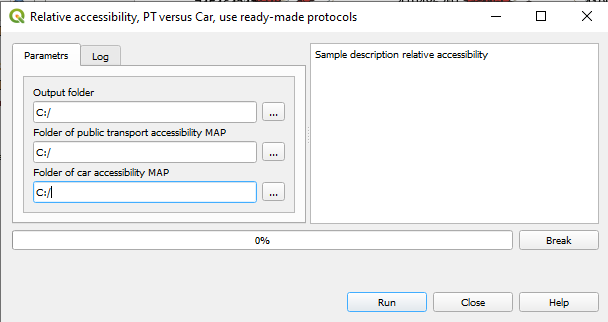

9. Compare accessibility¶
Often, you would like to compare the results of accessibility computations for two scenarios that investigate different travel modes or different sets of parameters. To compare, you have to provide the outputs of the computation for each of scenarios. Both must be performed for the same regime (AREA or MAP), and for the regions that are the same or, at least, overlap
The ACCESSIBILITY plugin checks if the comparison makes sense based on the Log files for each of the scenarios. The log files must be in the folder of the output, otherwise the comparison will quit. The sanity tests are several:
The test that both scenarios are for the same regime, AREA or MAP, and for same Forward or Backward option.
In the Forward regime, that the overlap between two sets of the origin buildings is not empty (Relevant for both AREA and MAP regimes).
In the Backward regime, the overlap between the sets of the destination buildings is not empty(Relevant for both AREA and MAP regimes).
In the MAP regime, the time bins of two outputs are the same
If the above tests are all succesfully passed, the comparison is performed for the overlapping parts of the output
9.1. The computation steps¶
Run the plugin and choose
Compare accessibility

Enter the parameters of computation in the dialog window:
Folder of the first output: The folder that contains the results of the first assessment.
Folder of the second output: The folder that contains the results of the second assessment.
Output folder: The folder for storage the results of the computation.
Accessibility ratio: The ratio of the results of the first scenario to the results of the second scenario, for the overlapping part of the outputs.
Accessibility difference: The difference between the results of the first scenario and the results of the second scenario, for the overlapping part of the outputs.
Accessibility relative difference: Accessibility difference divided the results of the second scenario, for the overlapping part of the outputs.
Click Run to start. The progressbar shows the progress of the computations.
Repeats the Log information of each of the compared sets.
If one of more tests have failed and comparison is cancelled, describes the reasons of the failures
If all tests are passed sussessfully, lists the chosen measures and the overlapping parts of the outputs.